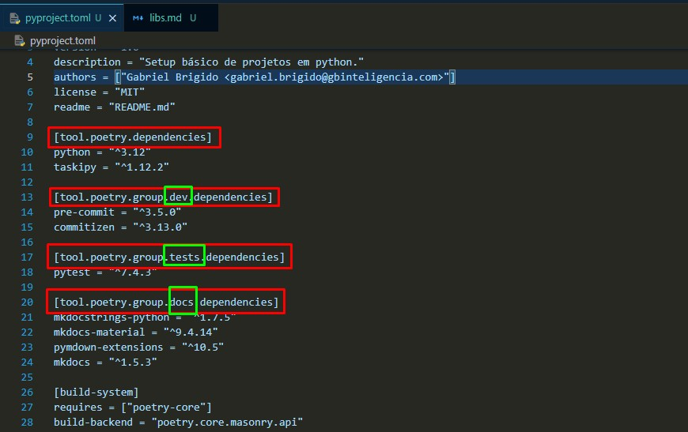
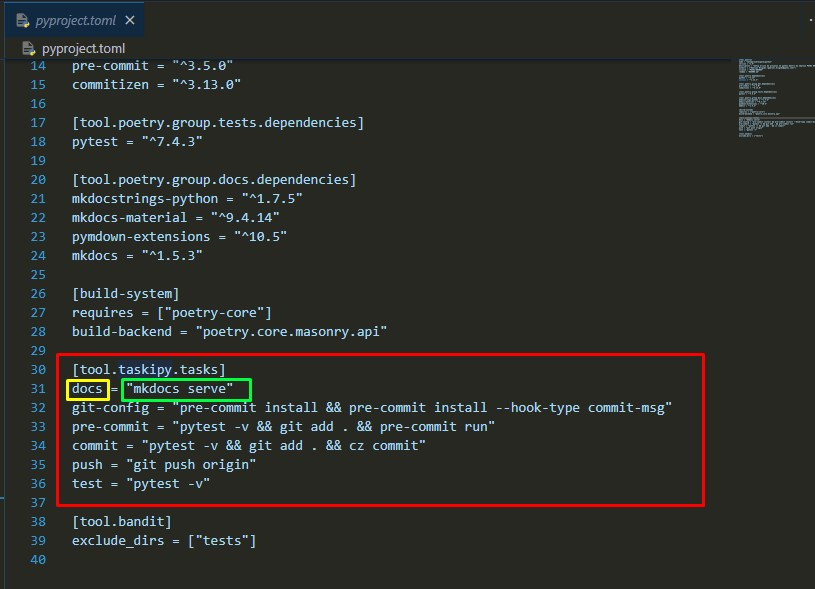

Bibliotecas padrão deste projeto
Para garantir os padrões de clean code e facilitar a vida do desenvolvedor no ciclo de desenvolvimento de projetos foram elencados algumas bibliotecas padrão, esta página irá descreve-las.
Pyenv
Conforme vamos avançando no desenvolvimento de projetos é normal o python avançar e lançar novas versões da linguagem. Este programa facilita a adiministração de várias versões do python na sua máquina de maneira simples e dinâmica, consulte a documentação aqui.
Instalação
Instalar o pyenv no windows pode ser algo complicado, siga este tutorial para facilitar o setup.
Utilização
Você precisa dominar apenas alguns comandos do pyenv:
-
Listar todas as versões disponíveis ja lançadas do python:
pyenv install -l -
Instalar versão do python:
pyenv install <numero-da-versao-desejada> -
Consultar versões do python instaladas na sua máquina:
pyenv versions -
Atribuir versão específica do python em um projeto (execute dentro do diretório do projeto):
pyenv local <numero-da-versao-desejada>Setando versão por projeto
Esse comando cria um arquivo
.python-versiondentro da raiz do seu projeto, utilize sempre esse comando para seu projeto ser executado na versão correta do python.
Poetry
O Poetry é uma biblioteca de gerenciamento de dependências e ambientes virtuais do python, utilize ele como base para suas instalações de pacotes do seu projeto. A documentação do Poetry pode ser acessada aqui.
Instalação
Você pode utilizar o pip para instalar o poetry na versão do python que você está utilizando:
pip install poetry
Pyenv + Poetry
Caso você não opte por uma instalação global do Poetry, você precisará executar o comando acima para cada versão do python que você instalar com o Pyenv. As configurações do Poetry (que você verá a seguir) são globais por padrão.
Configuração
É necessário realizar algumas configurações no poetry para a melhor execução dos seus projetos:
-
Criar os ambientes virtuais dentro do seu projeto:
poetry config virtualenvs.in-Project true -
Identificar qual versão do Python está ativada para o projeto:
poetry config virtualenvs.prefer-active-python true
Utilização
O Poetry utiliza por padrão um arquivo de configuração chamado pyproject.toml ele é a base do projeto, ele armazena os meta-dados do projeto, quais bibliotecas ele utiliza, automações e "skips" do projeto.
Entendendo as seções
O arquivo pyproject.toml funciona como um requirements.txt com esteróides, ele é mais organizado, e no mesmo arquivo você pode separar suas bibliotecas por grupos de instalação, o que é de uma imensa ajuda quando vamos fazer deploy em produção.
Cada "parte" do arquivo é denominada "seção", cada seção é declarada com um título que fica entre colchetes e é responsável por um atributo do porjeto. Segue exemplo de seções de dependências deste projeto: 
Cada destaque em vermelho é uma seção, neste caso cada seção corresponde a uma categoria de dependências, desenvolvimento, testes e documentação, respectivamente.
Adicionando bibliotecas
Você pode utilizar o Poetry para adicionar bibliotecas e frameworks de uma forma mais elegante, e de diversas formas:
Caso de exemplo
Usaremos como exemplo de instalação a biblioteca polars.
-
Adicionar o
polarsnas dependencias principais do projeto:poetry add polars -
Adicionar o
polarsem uma seção específica de dependencias:poetry add polars --group <id-do grupo>Exemplo:
poetry add polars --group dev #Adiciona o polars na seção de desenvolvimento do pyproject.toml
Instalando o pyproject.toml
Com o pyproject no seu projeto, você pode instalar as bibliotecas do seu projeto de maneira simples:
Ambientes virtuais
Por padrão, o Poetry SEMPRE criará um ambiente virtual para instalar as bibliotecas.
- Instalar TODAS as dependências do seu projeto:
poetry install --no-root
Você também pode instalar as bibliotas de cada seção individualmente:
- Instalar somente as bibliotecas da seção
dev:poetry install --no-root --with dev
Ou então ignorar as bibliotecas de uma determinada seção:
- Instalar as as bibliotecas do projeto EXCETO as bibliotecas da seção
dev:poetry install --no-root --without dev
Entrando no ambiente virtual para desenvolvimento
Após instalar as bibliotecas do seu projeto, basta executar um comando para ativar o ambiente virtual:
poetry shell
Taskipy
Esta é uma lib de abstração de comandos, você declara o comando no pyproject.toml e ele traduz isso para um comando do terminal. Documentação aqui.
Você pode declarar o comando na seção [tool.taskipy.tasks]:

Dentro da seção destacada em vermelho você pode escrever o nome do comando que você deseja chamar (destaque amarelo), e então qual comando o Taskipy vai executar (destaque verde).
Agora pra chamar cada comando cadastrado você pode usar função task:
task <nome-do-comando-no-pyproject>
Desta forma, ao executar o comando:
task docs
O comando executado no shell será:
mkdocs serve
Automatização
Utilize o Taskipy sempre que possível para automatizar suas rotinas!
Mkdocs
Esta Biblioteca é a documentação dos nossos projetos aqui na Pavei, é com base nela que você está lendo esta documentação!
Se quiser se aprofundar mais, leia a documentação aqui.
Pre-commit e Commitizen
Estas libs garantem a coesão e boas práticas no nosso código, juntas elas facilitam a documentação, o versionamento do código e garante que outro usuário consiga continuar no trabalho com qualidade.
Pre-commit
Esta lib cadastra os hooks que determinam quais as premissas que o código precisa seguir antes de ser commitado na branch.
Os hooks do projeto podem ser encontrados em .pre-commit-config.yaml.
Pre-commit
Utilize as orientações do Pre-commit SEMPRE, assim garantimos que o melhor código está subindo para a produção. Nossos processos dependem disso!
Commitzen
O Commitzen é uma biblioteca que transforma os commits básicos do git em commits semânticos.
Ao finalizar seu desenvolvimento você pode executar o comando:
task commit
Assim, ao invés de uma mensagem simples ao commitar, o desenvolvedor precisará descrever algumas características adicionais do seu commit:
-
O tipo de mudança que vocês está realizando no código:

-
Quais arquivos foram alterados
- Um breve resumo do que foi alterado
- Uma descriçao um pouco mais detalhada do que foi modificado
A pós isso o sistema irá realizar a avaliação do seu commit e, se estiver tudo ok, seu código será commitado na sua branch.
Ativando Pre-commit e Commitzen
Para ativar as regras de Pre-commit e o commitzen utilize o seguinte comando:
task git-config